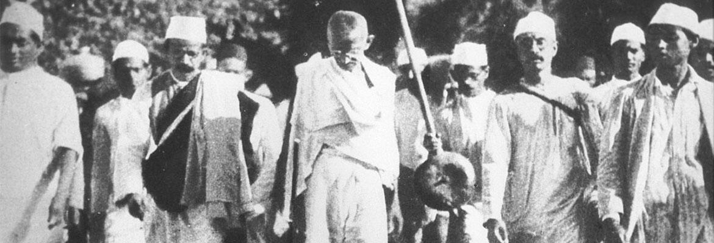
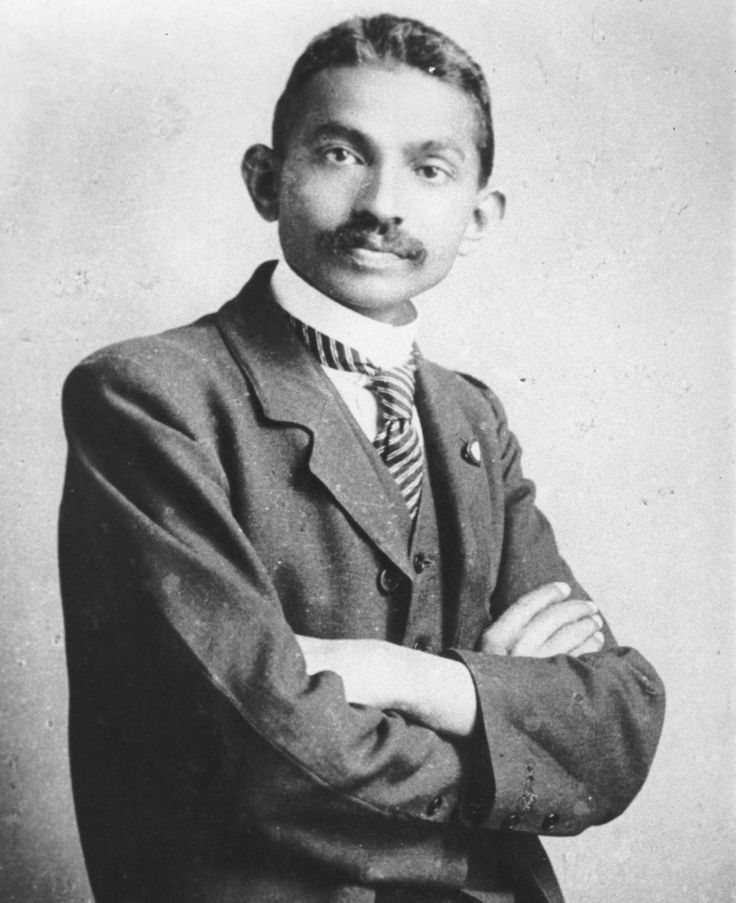
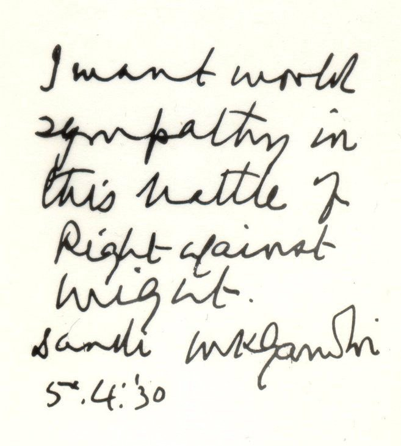

Mahatma Gandhi
1869 — Forever
“The trick is, knowing how to tip ourselves over and let the beautiful stuff out.”


Gandhi's handwritten letter, 1930Mahatma Gandhi was born October 2, 1869, in Porbandar, India. He became the leader of India's nonviolent independence movement against British rule and is known worldwide for his philosophy of peaceful resistance — a concept he called Satyagraha, meaning "truth-force."
Gandhi grew up in a modest family in Porbandar, a coastal city in western India. His father served as a chief minister, and his mother was deeply religious — an influence that shaped Gandhi's values for the rest of his life. He later studied law in London and spent years in South Africa, where he first began fighting against racial discrimination.
What makes Gandhi remarkable is not just what he achieved, but how he achieved it. He defeated one of the world's most powerful empires without firing a single shot — armed only with conviction, persistence, and an unshakeable belief that truth is stronger than force.
Gandhi arrived in South Africa in 1893 to work as a lawyer. On his very first train journey, he was thrown off a first-class carriage because of his race — an experience that lit a fire that would never go out. It was in South Africa that he developed Satyagraha — civil disobedience, peaceful marches, hunger strikes. Moral pressure so powerful it could shake an empire. When he finally returned to India in 1915, he refused every position offered under British authority. He would not work within a system he intended to dismantle.
Sources
Career
| Accomplishment | Year | Significance |
|---|---|---|
| Founded Satyagraha | 1906 | Created the philosophy of nonviolent resistance adopted worldwide |
| Led the Salt March | 1930 | Galvanized global support for Indian independence |
| Negotiated Indian Independence | 1947 | Ended nearly 200 years of British colonial rule in India |
| Inspired the Civil Rights Movement | 1950s–60s | Martin Luther King Jr. directly cited Gandhi as his model |
| Named Father of the Nation | Posthumous | Honored by the Indian government as the founding spirit of modern India |
Sources
Historical Significance
Gandhi's significance cannot be overstated. The creation of Satyagraha alone changed how the world thinks about power and resistance. But beyond that, he led an entire nation to independence — freeing over 300 million people from colonial rule without firing a single shot.
His influence did not stop at India's borders. From Martin Luther King Jr. to Nelson Mandela, leaders across the globe have credited Gandhi as the blueprint for peaceful revolution.
Sources
Learn about the challenges Gandhi faced and the lasting impact he left on the world.